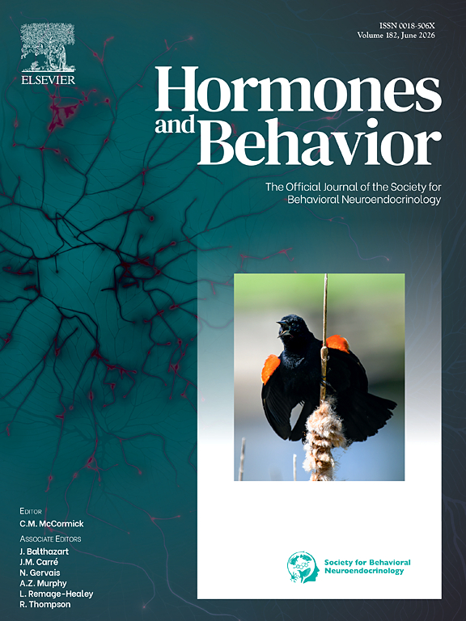
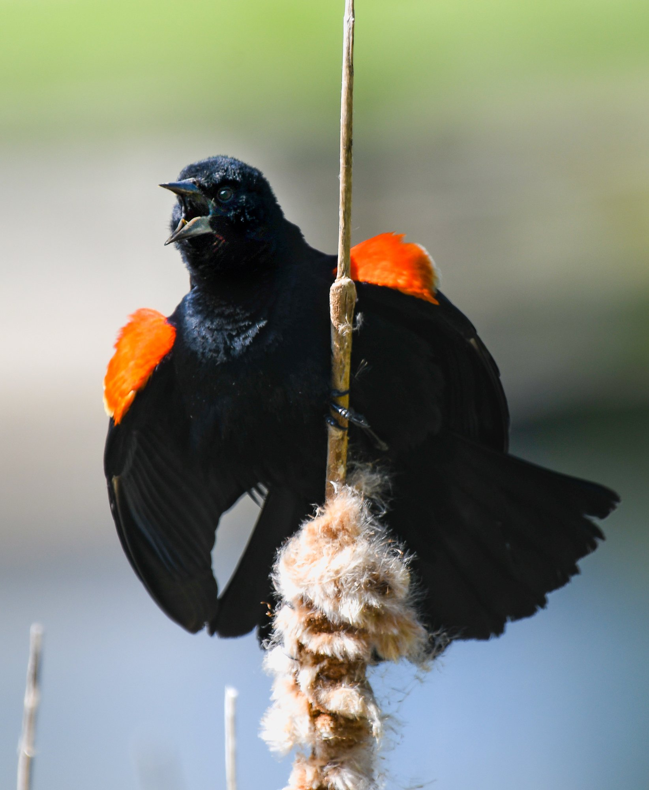
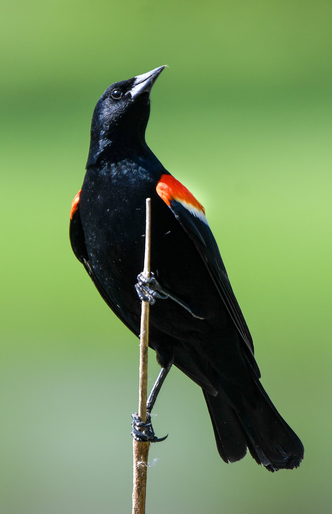
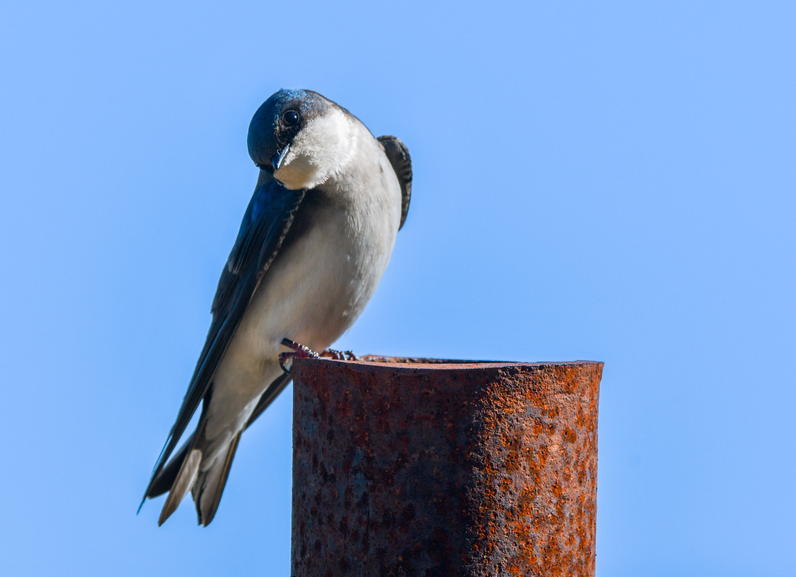
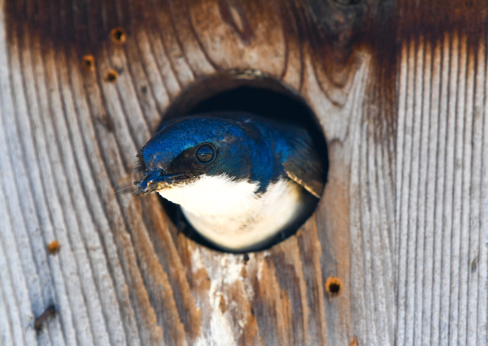
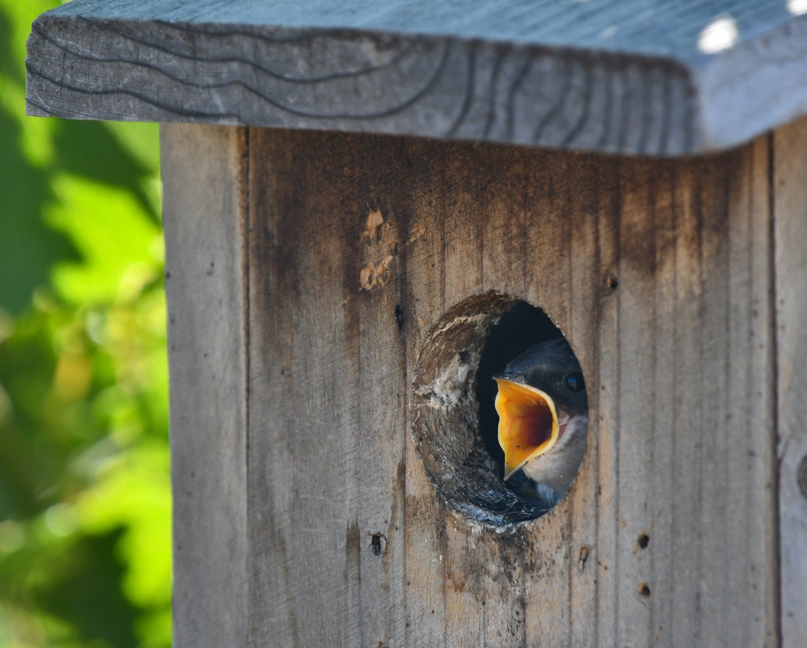
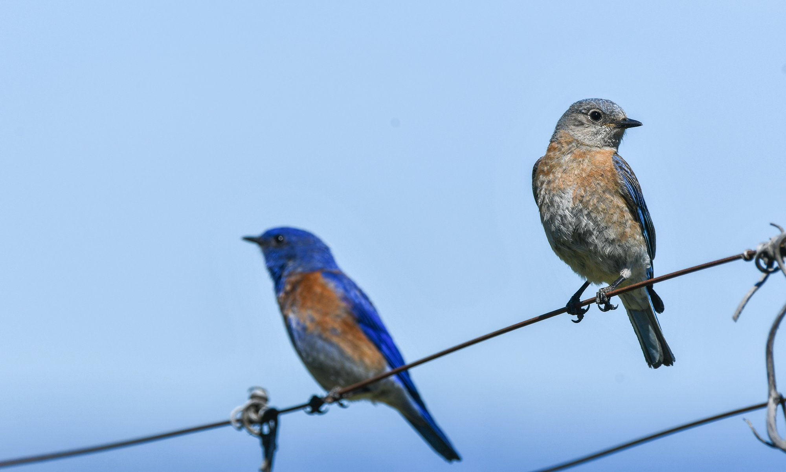
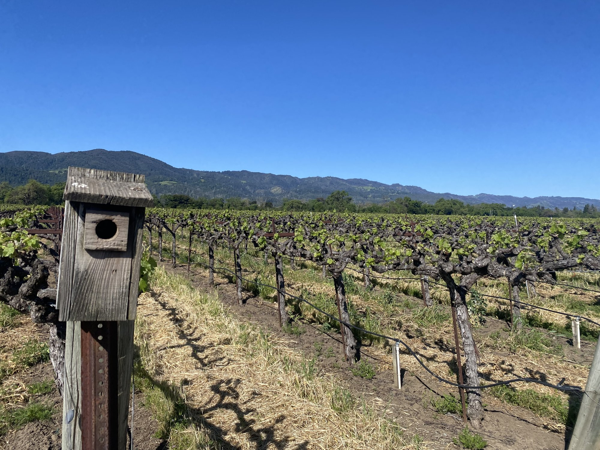
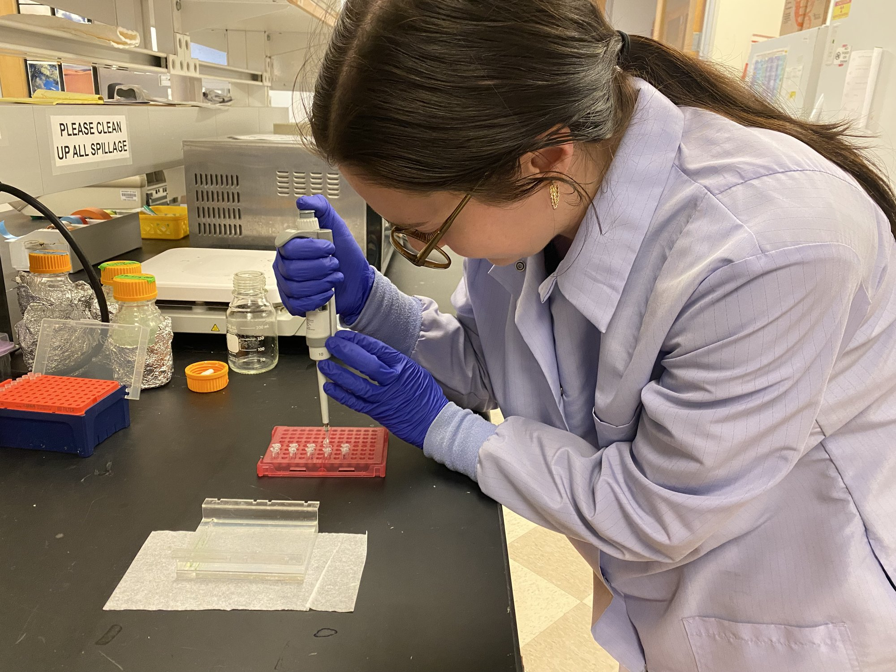

PHOTOGRAPHY & MEDIA
Wildlife photography, journal features & fieldwork

Featured Cover Photo
Hormones & Behavior
Volume 182 · June 2026
Cover photograph of a displaying male Red-winged Blackbird (Agelaius phoeniceus) perched on a cattail in a wetland ecosystem.
I use wildlife photography and visual media to document study species, organismal behaviors, and research across systems—bridging ecological science with public outreach.
Wildlife & Fieldwork Gallery

Yellow Warbler (Setophaga petechia)

Hooded Warbler (Setophaga citrina)

Common Yellowthroat (Geothlypis trichas)

Red-winged Blackbird (Agelaius phoeniceus) display

Red-winged Blackbird perched

Song Sparrow (Melospiza melodia)

Field Sparrow (Spizella pusilla)

White-crowned Sparrow (Zonotrichia leucophrys)

White-throated Sparrow (Zonotrichia albicollis)

California Towhee (Melozone crissalis)
Hormones & Behavior Cover (June 2026)

Tree Swallow (Tachycineta bicolor)

Tree Swallow perched

Tree Swallow nest building

Banded Tree Swallow

Tree Swallow in nest box

Tree Swallow on vineyard pole

Tree Swallow nestlings begging

Western Bluebird (Sialia mexicana) pair

Western Bluebird pair (female focus)

Spicebush Swallowtail (Papilio troilus)

Red Admiral (Vanessa atalanta)

Monarch butterfly (Danaus plexippus)

Monarch butterfly wing detail

Sara Orangetip (Anthocharis sara)

Blue Dasher Dragonfly (Pachydiplax longipennis)

Eight-spotted Skimmer (Libellula forensis)

Monitoring nest boxes in Napa Valley vineyards

Nest box in vineyard landscape, Napa Valley, California

Molecular DNA metabarcoding lab work